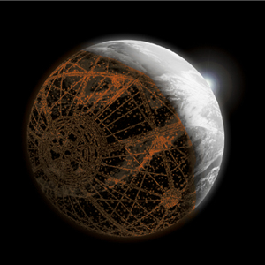

Située au cœur de la galaxie, Coruscant est le siège du gouvernement de la République galactique et de l'Empire qui lui succède. Intégralement recouverte de gratte-ciel, la planète compte plus de mille milliards d'habitants, dont de nombreux politiciens et industriels puissants et influents.
|  |